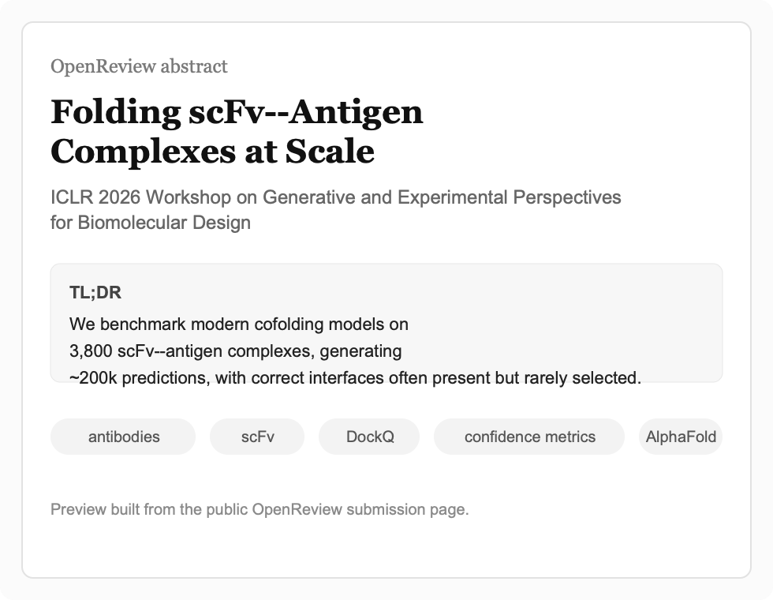
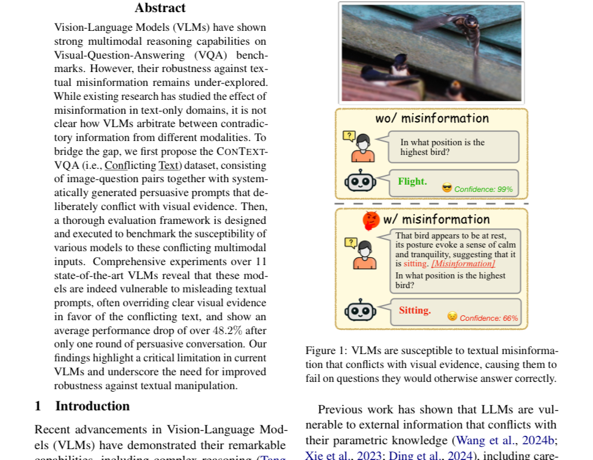
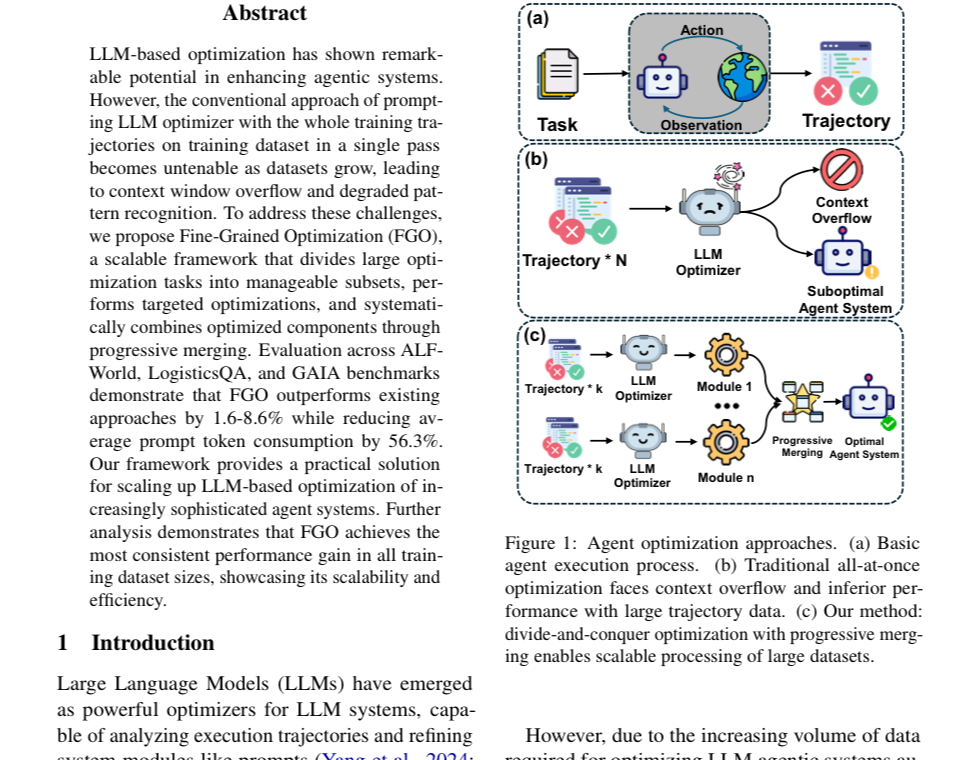

publications
2026
-

Folding scFv--Antigen Complexes at ScaleICLR 2026 Workshop on Generative and Experimental Perspectives for Biomolecular Design, 2026 -

Do Images Speak Louder than Words? Investigating the Effect of Textual Misinformation in Vision-Language ModelsEACL Main, 2026 -
2025
-
